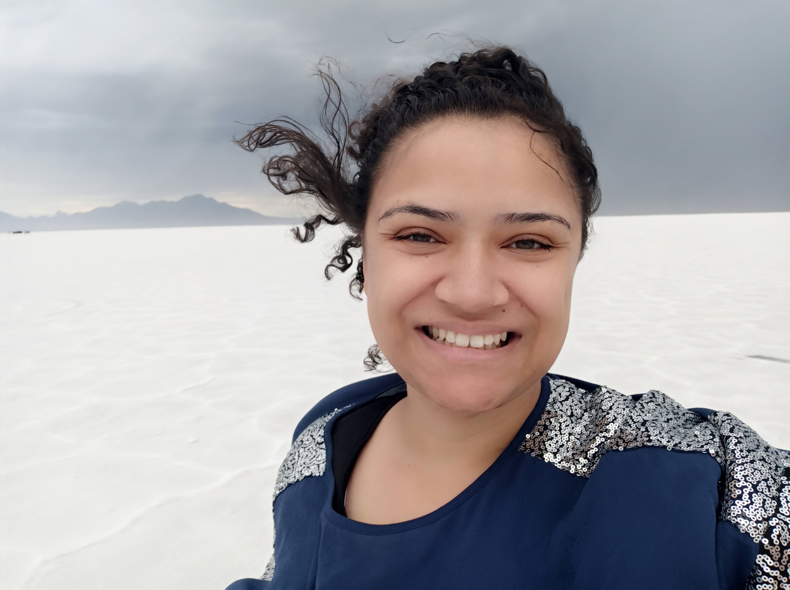

Carolina Aquino | WDD 130
Hello! My name is Carolina Aquino and I am from Brazil but I am currently living in San Antonio, Texas. I love staying home but I also like to know new, interesting places. The last place my family and I visited was the McAllen temple, because it was recently built, we had the opportunity to see inside, my girls loved the experience, it was their first time seeing so many parts of a temple. I like to sew, watch movies, listen to audiobooks, and learn interesting facts about nature with my daughters.
My favorite temples are: